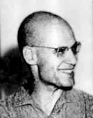

1928-2014
Alexander Grothendieck

Portrait: Konrad Jacobs, Erlangen, Copyright by MFO / Original uploader was AEDP at it.wikipedia, CC BY-SA 4.0, Wikimedia Commons.
Events (13)
- 1942Homological algebra
developer · Algebra
- 1945Category theory
developer · Algebra
- 1946Sheaf theory and sheaf cohomology
developer · Algebraic geometry
- 1949Weil conjectures
developer · Number theory
- 1955Abelian categories and derived functors (Tohoku)
developer · Category & homological algebra
- 1955Serre GAGA
developer · Algebraic geometry
- 1958K-theory and Grothendieck-Riemann-Roch: algebraic geometry enters topology
developer · Topology
- 1959Topological K-theory
developer · Algebraic topology
- 1960Etale cohomology
originator · Algebraic geometry
- 1960Scheme theory
originator · Algebraic geometry
- 1971Elementary topos theory
originator · Category & homological algebra
- 1973Higher algebraic K-theory
developer · Algebraic topology
- 1974Deligne proof of Weil conjectures
developer · Algebraic geometry